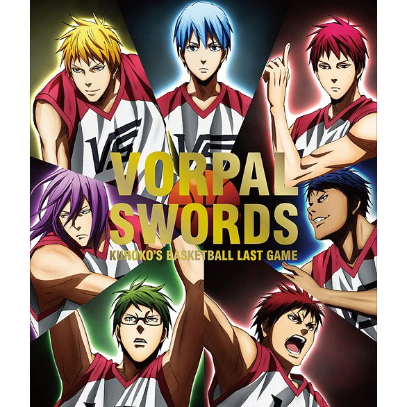

O time de basquete conhecido como:"A geração Milagrosa"! Desenvolvido em 10 de Fevereiro de 2021 porA.Presley-30 comentários
O melhor time de basquete do mundo:"Vorpal Swords"! O time de basquete composto com os melhores jogadores do Japão!  Nem mesmo o time: "JabberWocks" conseguiu vencer...